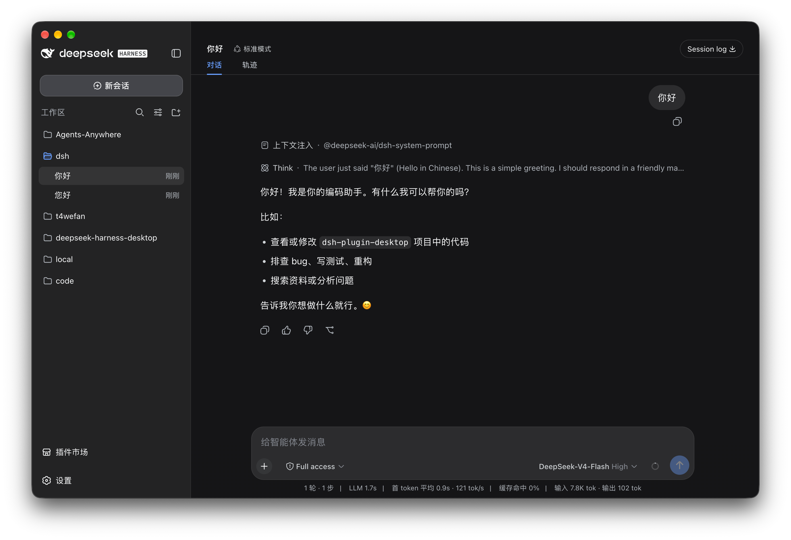
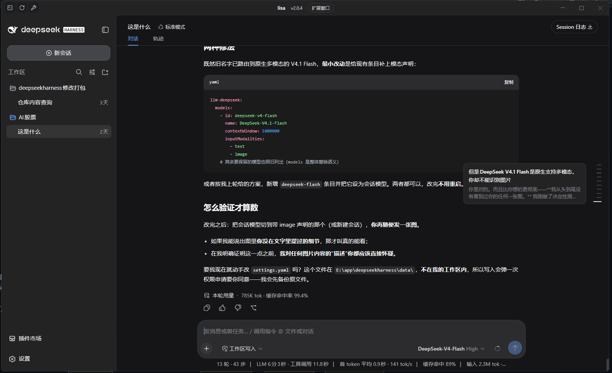

| 对比项 | ① 官方原版 | ② 我们的版本 |
|---|---|---|
| 窗口按钮风格 | macOS | Windows |
| 窗口标题 | 截图未露出 | lisa v2.0.4 |
| 品牌 logo 区 | deepseek HARNESS | deepseek HARNESS（未改） |
| 工作区列表 | dsh / local / code 等示例 | deepseekharness 修改打包（含"AI 股票"等真实项目） |
| 权限档位 | Full access | 工作区写入 |
| 数据目录 | 未显示 | E:\app\deepseekharness\data（便携模式生效） |
| 状态栏用量 | 1 轮 · 1 步 · 7.8K tok | 13 轮 · 43 步 · 2.3M tok |